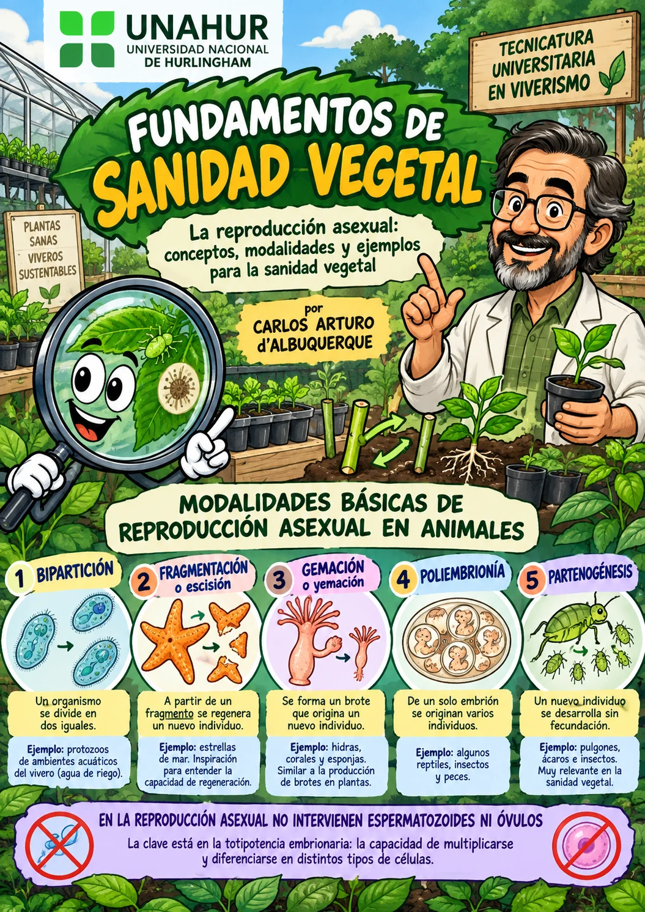

UNAHUR · VIVERISMO · GUÍA DE ESTUDIO 08
Multiplicación, diversidad y sanidad vegetalREPRODUCCIÓN ASEXUALen animales.
Descubrí las modalidades, compará sus mecanismos y conectá la biología con el monitoreo y la sanidad vegetal.

ANTES DE EMPEZAR
Cinco modalidades. Distintas maneras de multiplicarse.
Bipartición, fragmentación, gemación, poliembrionía y partenogénesis: estudiá qué inicia cada proceso y qué resultado produce.
El índice guía el recorrido. Sus 20 temas no coinciden uno a uno con los números de las láminas. Cada ficha indica el tema del índice y abre la imagen asociada por contenido; la galería conserva las 22 imágenes originales. Algunos temas del índice se integran a partir de varias láminas.
Para estudiar con precisión: la partenogénesis utiliza óvulos no fecundados; las bacterias y los protistas no son animales; regeneración no siempre significa reproducción. Las precisiones se explican en las fichas.
01 / TU RECORRIDO DE ESTUDIO
Del 01 al 20, como en el índice.
Elegí una ficha o avanzá paso a paso. Podés marcar las que ya repasaste.
02 / ENCONTRÁ LAS DIFERENCIAS
Una mirada, muchas pistas.
Buscá conceptos, especies y temas sin perder el orden del índice.
| Tema del índice | Idea o ejemplo | Para recordar | Grupo | Descripción |
|---|
Las fichas siguen los temas del índice; las imágenes se asocian según su contenido y conservan sus números originales.
EXPLORADOR DE MECANISMOS
¿Cómo empieza cada proceso?
Elegí una modalidad para comparar su punto de partida y su resultado.
03 / HACÉ MEMORIA
Leé la pregunta.
Recordá la idea.
Una tarjeta por tema, en el orden del índice. Intentá responder antes de darla vuelta.
04 / DESAFÍO DEL JARDÍN
Treinta preguntas para conectar ideas.
Veinte preguntas siguen los temas del índice y diez integran los conceptos. Aprendé con cada explicación.
TU MATERIAL DE CONSULTA
Veintidós láminas para explorar.
Portada, índice y las veinte láminas originales en orden numérico. Tocá para ampliar sin recortar.
PRECISIONES PARA ESTUDIAR
Las ilustraciones, con el contexto necesario.
- Sin fecundación no significa sin óvulos. La partenogénesis parte de un óvulo no fecundado. Los mecanismos asexuales no se reducen a una sola forma de clonación. OpenStax: métodos reproductivos.
- Poliembrionía: ejemplo verificado. Se utiliza Copidosoma floridanum para explicar la multiplicación embrionaria; no se adopta la atribución general a Trichogramma o Cotesia de las láminas 5 y 9. Muchos individuos en un hospedador también pueden proceder de varios huevos. Estudio sobre Copidosoma floridanum.
- Totipotencia es una capacidad específica. No es una propiedad de toda célula de un embrión, larva o animal adulto. Los tejidos vegetales de los esquemas son ejemplos comparativos. NCBI: células totipotentes.
- Regenerar no siempre es reproducirse. La formación de otro individuo depende de especie y tejido conservado; una lesión o un fragmento no lo garantizan. Fragmentación y regeneración.
- Comparaciones entre grupos. Bacterias, hongos y protistas se distinguen de los animales; los ácaros son arácnidos. La reproducción sexual se define por la unión de gametos y puede darse con autofecundación.
Material ilustrado: Carlos Arturo d’Albuquerque · Fundamentos de Sanidad Vegetal · UNAHUR. Las imágenes originales se conservan completas; las aclaraciones están en el texto de estudio.